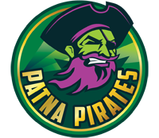
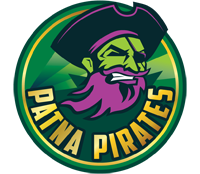

The Pro Kabaddi League (PKL) is a
professional kabaddi league in india, based on the format of the
Indian Premier League T20 Cricket tournament.
The first edition of the
tournament was played in2014 with
eight franchises representing various
cities in india. Its currently managed by
Mashal sports.

.png) 


Info
The Pro Kabaddi League (PKL) (officially known as the Star Sports Pro Kabaddi for sponsorship reasons) is a professional kabaddi league in India, based on the format of the Indian Premier League T20 cricket tournament. It is the first significant initiative of Mashal Sports and takes the truly indigenous sport of Kabaddi to new levels of professionalism. Within a short span of three years and four seasons, it has been largely successful in popularizing Kabaddi and bringing it to the masses. It not only benefits the stakeholders involved in the ecosystem of the game, but also the players themselves.
Broadcasting rights
Star Sports was named as the official broadcaster
in May 2014 with the online rights going to starsports.com
History
Pro kabaddi is a professional kabaddi league founded in 2014.It is formulated as
an eight-city league played in a "caravan format," traveling together to
all 8 venues to play a totalof 60 matches. It is an initiative of mashal sports
a company which was co founded by Mr. Anand Mahindra,
chairman, Mahindra Group and Charu Sharma, who is also
a director of Mashal Sports.
Viewership
As per the available data of the opening 2 weeks, Star Sports Pro Kabaddi viewership on TV increased by nearly 56% from the 2014 year’s viewership. During the inaugural season tournament viewership was 43.5 crore(435 million) viewers, which was the second in India after the 56 crore(560 million) of IPL viewership.
The online viewership also increased 1.3 crore unique visitors, which is 18.5 times than of last year’s 7 lakh unique visitors.
The third season which was flagged off on 30 January, recorded a surge in viewership with the opening week ratings 36 per cent higher than the week one viewership for its last season.